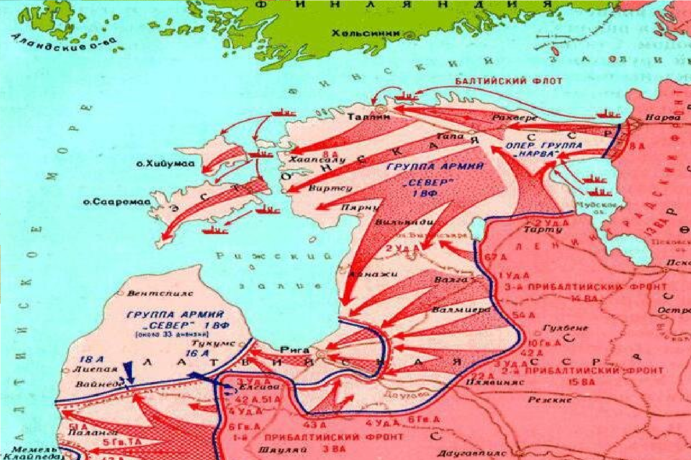
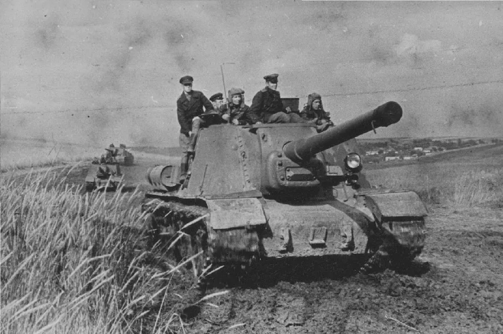
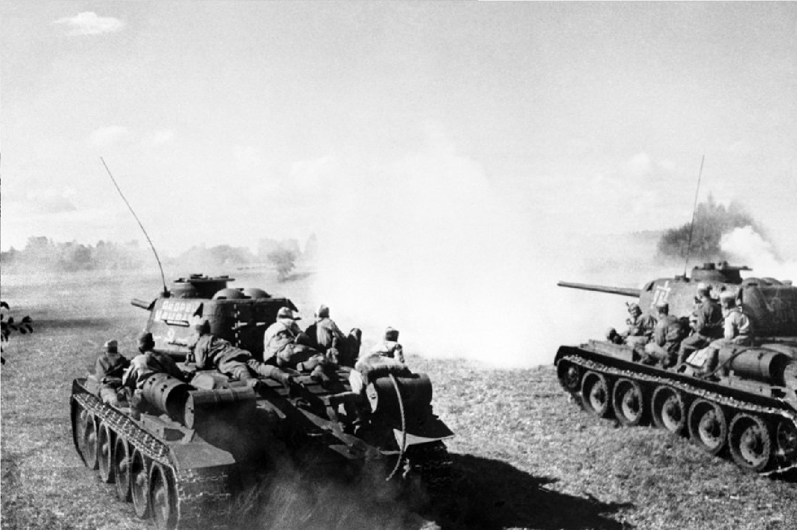

1944
|  |
|
1. ПодготовкаВ начале 1944 года советское командование подготовило план для освобождения прибалтийских республик от немецкой оккупации. Операция была запланирована на лето 1944 года. 2. Начало наступленияОперация началась 14 сентября 1944 года с ударов Таллинского и Рижского фронтов. Основными задачами были окружение и уничтожение немецких группировок в Прибалтике. 3. Бои за ТаллинВ ходе операции произошло освобождение Таллина, столицы Эстонии, после ожесточенных боев. Немецкие войска были вынуждены оставить город, который был стратегически важен для контроля над Балтийским морем. 4. Освобождение Латвии и ЛитвыПосле захвата Таллина советские войска продолжили наступление на запад и юг, освобождая Латвию и Литву. В результате быстро развивающегося наступления немецкие войска понесли значительные потери и были вынуждены отойти. 5. Завершение операцииК концу октября 1944 года советские войска полностью завершили операцию, освободив все три прибалтийские республики. Это стало важной стратегической победой для Красной Армии. |
 |
|  |
Итоги операции- Прибалтийская операция способствовала дальнейшему продвижению советских войск в направлении Восточной Пруссии и обеспечила контроль над Балтийским морем. Эта операция сыграла важную роль в общем ходе Великой Отечественной войны и в итоговом поражении нацистской Германии. |